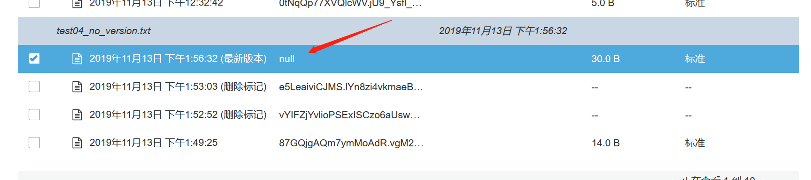
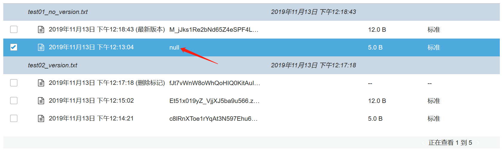

聊一聊AWS S3的版本控制
0x00 前言
为了避免文件误删除、误修改，这里有一个版本控制的功能。
0x01 AWS S3 版本控制
一个比较有意思的点，S3版本控制功能一旦启用之后，是不能禁用的，只能暂停。
来通过CLI观察一下版本控制的三种状态：
- 未开启版本控制
- 开启版本控制
- 暂停版本控制
1 | [ec2-user@ip-10-0-0-64 ~]$ aws s3api get-bucket-versioning --bucket tonghua-test01 |
那有一个问题，比如说，我一个S3 Bucket开启了版本控制功能，然后上传文件，同时也产生了多个版本，然后我把它版本控制功能给暂停了，那么之前的object的多个版本仍然会存在，是不会被删掉的，只是再上传上去的文件没有多个版本了而已。
再有一个，就是我暂停版本控制之后，再往上传对象的时候，会产生一个对象为null的新版本。

做个实验看一看：
- 暂停版本控制的时候上传1个对象，查看对象的状态
- 启用版本控制的时候上传1个对象，在上传一个同名对象给覆盖掉，查看对象状态
- 暂停版本控制，上传一个对象，观察对象的状态
1 | [ec2-user@ip-10-0-0-64 ~]$ aws s3api get-bucket-versioning --bucket tonghua-test01 |

版本ID为null的是我在开启版本控制之前上传的对象。
这里就有一个比较有意思的问题了，就是我该如何操作才能删除这个version id为null的对象呢？
用控制台可以直接删，在CLI中使用–version-id null完事删除失败(错了，试了下，CLI中使用–version-id null也能删，没啥意思。）。
那我做deletemarker的时候，是再创建一份对象，然后打上deletemarker的标签吗？
看起来不是，deletemarker没啥大小。直接就0KB了，不过要是做list object的话，那还是要都遍历一遍，而这些都遍历一遍，那还是挺耗时的。完事虽然这些不会显示出来，但是会频繁响应空的XML，可能会有timeout的风险什么的。解决这个问题的方法也会比较简单粗暴了，用V2版本的api就成list-objects-v2
那我一个对象的多个版本是不是就可以做多个deletemarker了呢？
如果我在delete-object时指定一个–version-id，那我是不会做deletemarker的，只会把对应版本的对象给删掉。
不过话又说回来，如果我不指定–version-id，只用delete-object的话，那就会有多个deletemarker的标签了1
2
3
4
5
6
7
8
9
10
11[ec2-user@ip-10-0-0-64 ~]$ aws s3api delete-object --bucket tonghua-test01 --key test04_no_version.txt
{
"VersionId": "vYIFZjYvlioPSExISCzo6aUswP2BsbO1",
"DeleteMarker": true
}
[ec2-user@ip-10-0-0-64 ~]$ aws s3api delete-object --bucket tonghua-test01 --key test04_no_version.txt
{
"VersionId": "e5LeaiviCJMS.lYn8zi4vkmaeBzCY3xC",
"DeleteMarker": true
}
[ec2-user@ip-10-0-0-64 ~]$
0x02 后记
没啥说的，就是开版本控制，deletemarker之后，如果没注意，可能会看到桶中的总容量，与我当前版本的容量不一致的情况，这是因为老版本也会占用存储空间。
然后分段上传产生的为组装的一起的片段也是占用空间的。